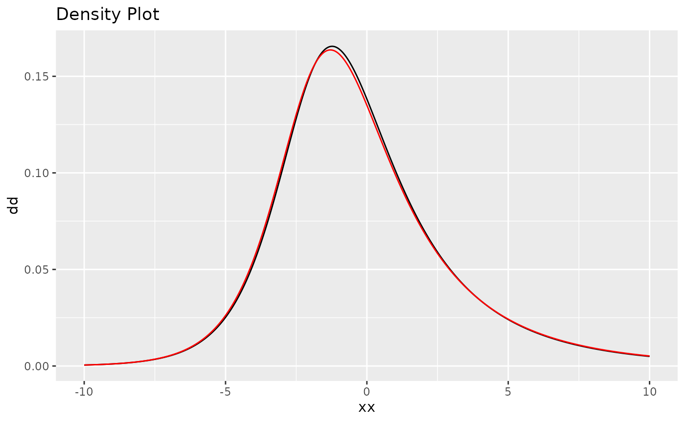

Ngme2 - A new Flexible R Package for Latent non-Gaussian Models
2022-11-14
ngme2.RmdIntroduction
In this vignette we provide a brief introduction to the
ngme2 package.
ngme2 is the updated version of ngme (https://github.com/davidbolin/ngme), a package for
estimating latent non-Gaussian models. It follows a 3-layer
structure in design (the general block model, latent process
models, and noises) for specifying the whole statistical model. The
latent process defines different operator structure, and the block model
collects them together with the fixed effects and measurement noise.
1 Features
- Support spatial models like Matern model with non-Gaussian noise.
- Support models for temporal data like AR1 and random walk of order 1 and 2.
- Support replicates at same locations.
- Support prediction at unknown locations.
- Comparing to the previous version, it now supports multiple stochastic processes in the latent model.
2 Model Framework
The package ngme2 provides methods for mixed effect
models both for single response variable case and multivariate response
case (not yet).
1.For single response case, it has the following form: \[ \begin{aligned} Y = {\bf X}^{\top} {\bf \beta} + \sum_j {\bf A}_j W_j({\bf t}) + \epsilon. \end{aligned} \]
Here,
- \(Y\) is the response variable,
- \({\bf X}\) is the matrix of fixed effects explanatory variables,
- \({\bf \beta}\) is the matrix of fixed effects coefficients,
- \({\bf A}_j\) is the observation matrix for each process,
- \(W_j(t_j)\) is specified as a stochastic process,
- \(\epsilon\) is measurement error.
Here, the process \(W\) follows \({\bf K} W = z\), where \(z\) is either Gaussian or non-Gaussian noise. \({\bf K}\) is the operator matrix.
Here is a simple template for using the core function
ngme to model the single response:
ngme(
formula=Y ~ x1 + x2 + f(index, model="ar", noise="nig"),
data=data.frame(Y=Y, x1=x1, x2=x2, index=index),
noise = noise_normal()
)Here, function f is for modeling the stochastic process
W with Gaussian or non-Gaussian noise, we will discuss this later.
noise stands for the measurement noise distribution. In
this case, the model will have a Gaussian likelihood.
For multivariate response case, it has the following form:
Here is a another template for using the core function
ngme to model the bivariate response:
ngme(
formula=Y1 | Y2 ~ x1 + x2 + f(index, model="ar", noise="nig") | f(time, model="matern"),
data=data.frame(Y=Y, x1=x1, x2=x2, index=index, time=time),
family="normal"
)3 Non-Gaussian Model
Here we assume the non-Gaussian process is a type-G Lévy process, whose increments can be represented as location-scale mixtures: \[\gamma + \mu V + \sigma \sqrt{V}Z,\] where \(\gamma, \mu, \sigma\) are parameters, \(Z\sim N(0,1)\) and is independent of \(V\), and \(V\) is a positive infinitely divisible random variable. It results in the following form, where \(K\) is the operator part:
\[ KW|V \sim N(\gamma + \mu V, \sigma^2 \, diag(V)), \] also, \(\mu\) and \(\sigma\) can be non-stationary.
In Ngme2, we focus mainly on the normal inverse Gaussian (NIG) model.
The NIG model
First, we say that a random variable \(V\) follows an inverse Gaussian distribution with parameters \(\eta_1\) and \(\eta_2\), denoted by \(V\sim IG(\eta_1,\eta_2)\) if it has pdf given by
\[\pi(v) = \frac{\sqrt{\eta_2}}{\sqrt{2\pi v^3}} \exp\left\{-\frac{\eta_1}{2}v - \frac{\eta_2}{2v} + \sqrt{\eta_1\eta_2}\right\},\quad \eta_1,\eta_2>0.\]
We can generate samples of inverse Gaussian distributions with parameters \(\eta_1\) and \(\eta_2\) by generating samples from the generalized inverse Gaussian distribution with parameters \(p=-1/2\), \(a=\eta_1\) and \(b=\eta_2\). We can use the rGIG function to generate samples from the generalized inverse Gaussian distribution.
If \(V\sim IG(\eta_1,\eta_2)\), then \(X = \gamma +\mu V + \sigma \sqrt{V}Z\), with \(Z\sim N(0,1)\), being independent of \(V\), then \(X\) follows a normal inverse Gaussian (NIG) distribution and has pdf \[\pi(x) = \frac{e^{\sqrt{\eta_1\eta_2}+\mu(x-\gamma)/\sigma^2}\sqrt{\eta_2\mu^2/\sigma^2+\eta_1\eta_2}}{\pi\sqrt{\eta_2\sigma^2+(x-\gamma)^2}} K_1\left(\sqrt{(\eta_2\sigma^2+(x-\gamma)^2)(\mu^2/\sigma^4+\eta_1/\sigma^2)}\right),\] where \(K_1\) is a modified Bessel function of the third kind. In this form, the NIG density is overparameterized, and we therefore set \(\eta_1=\eta_2=\eta\), which results in \(E(V)=1\). Thus, one have the parameters, \(\mu, \gamma\) and \(\eta\).
The NIG model thus assumes that the stochastic variance \(V_i\) follows an inverse Gaussian with parameters \(\eta\) and \(\eta h_i^2\), where \(h_i = \int_{\mathcal{D}} \varphi_i(\mathbf{s}) d\mathbf{s}.\)
Below, we see the plot of the densities of a NIG distribution for several choices of the parameters (we fix \(\gamma=0\) and \(\eta=1\)):
Ngme Model Structure - 3-Layer structure
Specify noise with ngme_noise object
The ngme_noise object is the most fundamental structure
in ngme2. The object is used to specify the driving noise
of the stochastic process and the measurement noise.
For now we support two noises, one is normal noise, the other is the NIG noise.
The R class ngme_noise has the following interface:
library(ngme2)
noise_normal(sd = 1) # normal noise
#> Noise type - normal
#> Noise parameters:
#> sigma = 1
noise_nig(mu = 1, sigma = 2, nu = 1) # nig noise
#> Noise type - nig
#> Noise parameters:
#> mu = 1
#> sigma = 2
#> nu = 1
noise_nig( # non-stationary nig noise
B_mu=matrix(c(1:10), ncol=2),
theta_mu = c(1, 2),
B_sigma=matrix(c(1:10), ncol=2),
theta_sigma = c(1,2),
nu = 1)
#> Noise type - nig
#> Noise parameters:
#> theta_mu = 1, 2
#> theta_sigma = 1, 2
#> nu = 1The 3rd example is the non-stationary NIG noise, where \(\mu = \bf B_{\mu} \bf \theta_{\mu}\), and \(\sigma = \exp(\bf B_{\sigma} \bf \theta_{\sigma})\).
ngme_noise(
type, # the type of noise
theta_mu, # mu parameter
theta_sigma, # sigma parameter
theta_V, # nu parameter
B_mu, # basis matrix for non-stationary mu
B_sigma # basis matrix for non-stationary sigma
)It will construct the following noise structure:
\[ - \mathbf{\mu} + \mathbf{\mu} V + \mathbf{\sigma} \sqrt{V} Z \]
where \(\mu = \bf B_{\mu} \bf
\theta_{\mu}\), and \(\sigma = \exp(\bf
B_{\sigma} \bf \theta_{\sigma})\). In this case, we can recover
gaussian noise by setting type=“normal and ignoring
theta_mu and theta_V. Or we can simply
use helper function noise_normal(sd=1)
Specify stochastic process with f function
The middle layer is the stochastic process, in R interface, it is
represented as a f function. The process can be specified
by different noise structure.
Some examples of using f function to specify
ngme_model:
f(index = 1:10, model = "ar1",
noise = noise_nig(), theta_K = 0.5)
#> as(<dgTMatrix>, "dgCMatrix") is deprecated since Matrix 1.5-0; do as(., "CsparseMatrix") instead
#> Ngme model: ar1
#> Model parameters:
#> alpha = 0.5
#>
#> Noise type - nig
#> Noise parameters:
#> mu = 0
#> sigma = 1
#> nu = 1Specify latent model with formula in ngme
The latent model can be specified additively as a
formula argument in ngme function together
with fixed effects.
It can be specified as following:
ngme(
formula = Y ~ x1 + f(
index = x2,
model = "ar1",
noise = noise_nig(),
theta_K = 0.5
) + f(
model = model_rw(1:5, order=1, circular = TRUE),
noise = noise_normal(),
),
family = noise_normal(sd = 0.5),
data = data.frame(Y = 1:5, x1 = 2:6, x2 = 3:7),
control = ngme_control(
estimation = FALSE
)
)
#> *** Ngme object ***
#>
#> Fixed effects:
#> beta = -1, 1
#>
#> Measurement noise:
#> Noise type - normal
#> Noise parameters:
#> sigma = 0.5
#>
#>
#> Latent models:
#> [[1]]
#> Ngme model: ar1
#> Model parameters:
#> alpha = 0.5
#>
#> Noise type - nig
#> Noise parameters:
#> mu = 0
#> sigma = 1
#> nu = 1
#> [[2]]
#> Ngme model: rw1
#> Model parameters:
#> No parameter needed.
#>
#> Noise type - normal
#> Noise parameters:
#> sigma = 1It gives the ngme object, which has three parts:
- Fixed effects (intercept and x1)
- Measurement noise (normal noise)
- Latent models (contains 2 models, ar1 and rw1)
We can turn the estimation = TRUE to start estimating
the model.
The SPDE approach with Gaussian noise
It is well-known (Whittle, 1963) that a Gaussian process \(u(\mathbf{s})\) with Matérn covariance function solves the stochastic partial differential equation (SPDE) \[\begin{equation}\label{spde} (\kappa^2 -\Delta)^\beta u = \mathcal{W}\quad \hbox{in } \mathcal{D}, \end{equation}\] where \(\Delta = \sum_{i=1}^d \frac{\partial^2}{\partial_{x_i^2}}\) is the Laplacian operator, \(\mathcal{W}\) is the Gaussian spatial white noise on \(\mathcal{D}=\mathbb{R}^d\), and \(4\beta = 2\nu + d\).
Inspired by this relation between Gaussian processes with Matérn covariance functions and solutions of the above SPDE, Lindgren et al. (2011) constructed computationally efficient Gaussian Markov random field approximations of \(u(\mathbf{s})\), where the domain \(\mathcal{D}\subsetneq \mathbb{R}^d\) is bounded and \(2\beta\in\mathbb{N}\).
The motivation for handling non-Gaussian noise comes from the fact that many features cannot not be handled by Gaussian noise. Some of these reasons are:
- Skewness;
- Heavier tails;
- Jumps in the sample paths;
- Asymmetries in the sample paths.
Non-Gaussian Matérn fields
The idea is to replace the Gaussian white noise \(\mathcal{W}\) in the SPDE by a non-Gaussian white noise \(\dot{\mathcal{M}}\): \[(\kappa^2 - \Delta)^\beta u = \dot{\mathcal{M}}.\] The solution \(u\) will have Matérn covariance function, but their marginal distributions will be non-Gaussian.
We want to apply the same idea to the non-Gaussian case, i.e., we want to consider the SPDE on a bounded domain \(\mathcal{D}\subset\mathbb{R}^d\) and apply the finite element method.
Notice that the left-hand side of the equation did not change. Therefore, we should only take care of the right-hand side.
We will consider the same setup. More precisely, we consider \(V_n = {\rm span}\{\varphi_1,\ldots,\varphi_n\}\), where \(\varphi_i(\mathbf{s}), i=1,\ldots, n\) are piecewise linear basis functions obtained from a triangulation of \(\mathcal{D}\) and we approximate the solution \(u\) by \(u_n\), where \(u_n\) is written in terms of the basis functions as \[u_n(\mathbf{s}) = \sum_{i=1}^n w_i \varphi_i(\mathbf{s}).\] In the right-hand side we obtain a random vector \[\mathbf{f} = (\dot{\mathcal{M}}(\varphi_1),\ldots, \dot{\mathcal{M}}(\varphi_n)),\] where the functional \(\dot{\mathcal{M}}\) is given by \[\dot{\mathcal{M}}(\varphi_j) = \int_{\mathcal{D}} \varphi_j(\mathbf{s}) d\mathcal{M}(\mathbf{s}).\] By considering \(\mathcal{M}\) to be a type-G Lévy process, we obtain that \(\mathbf{f}\) has a joint distribution that is easy to handle.
We say that a Lévy process is of type G if its increments can be represented as location-scale mixtures: \[\gamma + \mu V + \sigma \sqrt{V}Z,\] where \(\gamma, \mu\) are parameters, \(Z\sim N(0,1)\) and is independent of \(V\), and \(V\) is a positive infinitely divisible random variable.
Therefore, given a vector \(\mathbf{V} = (V_1,\ldots,V_n)\) of independent stochastic variances (in our case, positive infinitely divisible random variables), we obtain that \[\mathbf{f}|\mathbf{V} \sim N(\gamma + \mu\mathbf{V}, \sigma^2{\rm diag}(\mathbf{V})).\] So, if we consider, for instance, the non-fractional and non-Gaussian SPDE \[(\kappa^2 - \Delta) u = \dot{\mathcal{M}},\] we obtain that the FEM weights \(\mathbf{w} = (w_1,\ldots,w_n)\) satisfy \[\mathbf{w}|\mathbf{V} \sim N(\mathbf{K}^{-1}(\gamma+\mu\mathbf{V}), \sigma^2\mathbf{K}^{-1}{\rm diag}(\mathbf{V})\mathbf{K}^{-1}),\] where \(\mathbf{K} = \kappa^2\mathbf{C}+\mathbf{G}\) is the discretization of the differential operator.
Computational advantages of the SPDE approach
For spatial problems, the computational cost usually scales as \(\mathcal{O}(n^{3/2})\), where \(n\) is the number of basis functions. This should be compared to the \(\mathcal{O}(N^3)\) of the Gaussian random field approach.
This implies in accurate approximations which drastically reduces the computational cost for sampling and inference.
A simple example - AR1 process with nig noise
Now let’s see an example of an AR1 process with nig noise. The process is defined as
\[ W_i = \alpha W_{i-1} + \epsilon_i, \] Here, \(\epsilon_1, ..,\epsilon_n\) is the iid NIG noise. And, it is easy to verify that \[ K{\bf W} = \boldsymbol\epsilon,\] where \[ K = \begin{bmatrix} \alpha \\ -1 & \alpha \\ & \ddots & \ddots \\ & & -1 & \alpha \end{bmatrix} \]
n_obs <- 500
sigma_eps <- 0.5
alpha <- 0.5
mu = 2; delta = -mu
sigma <- 3
nu <- 1
# First we generate V. V_i follows inverse Gaussian distribution
trueV <- ngme2::rig(n_obs, nu, nu, seed = 10)
# Then generate the nig noise
noise <- delta + mu*trueV + sigma * sqrt(trueV) * rnorm(n_obs)
trueW <- Reduce(function(x,y){y + alpha*x}, noise, accumulate = T)
Y = trueW + rnorm(n_obs, mean=0, sd=sigma_eps)
# Add some fixed effects
x1 = runif(n_obs)
x2 = rexp(n_obs)
beta <- c(-3, -1, 2)
X <- (model.matrix(Y ~ x1 + x2)) # design matrix
Y = as.numeric(Y + X %*% beta)Now let’s fit the model using ngme. Here we can use
ngme_control to modify the control variables for the
ngme. See ?ngme_control for more optioins.
# # Fit the model with the AR1 model
ngme_out <- ngme(
Y ~ x1 + x2 + f(
1:n_obs,
model = "ar1",
noise = noise_nig(),
theta_K = 0.9 # starting point for the alpha (parameter of K)
),
data=data.frame(x1=x1, x2=x2, Y=Y),
control = ngme_control(
burnin = 100,
iterations = 1000,
std_lim = 0.4,
gibbs_sample = 5,
n_parallel_chain = 4,
stop_points = 10,
print_check_info = FALSE
),
seed = 3
)
#> Starting estimation...
#> Estimation done!Next we can read the result directly from the object.
ngme_out
#> *** Ngme object ***
#>
#> Fixed effects:
#> beta = -2.91, -1.44, 1.99
#>
#> Measurement noise:
#> Noise type - normal
#> Noise parameters:
#> sigma = 0.788
#>
#>
#> Latent models:
#> [[1]]
#> Ngme model: ar1
#> Model parameters:
#> alpha = 0.564
#>
#> Noise type - nig
#> Noise parameters:
#> mu = 1.86
#> sigma = 2.82
#> nu = 0.831As we can see, the model converges in 350 iterations. The estimation results are close to the real parameter.
We can also use the traceplot function to see the
estimation traceplot.
library(ggplot2)
library(grid)
library(gridExtra)
pl <- lapply(c("alpha", "mu", "sigma", "nu"), function(.x)
traceplot(ngme_out, parameter = .x, f_index = 1));
marrangeGrob(pl, nrow=2, ncol=2)Parameters of the AR1 model
We can also do a density comparison with the estimated noise and the true NIG noise:
plot(
ngme_out$latents[[1]]$noise,
noise_nig(mu = mu, sigma = sigma, nu = nu)
)
Parana dataset
The rainfall data from Paraná (Brazil) is collected by the National Water Agency in Brazil (Agencia Nacional de Águas, ANA, in Portuguese). ANA collects data from many locations over Brazil, and all these data are freely available from the ANA website (http://www3.ana.gov.br/portal/ANA).
We will briefly illustrate the command we use, and the result of the estimation.
library(INLA)
#> Loading required package: Matrix
#> Loading required package: foreach
#> Loading required package: parallel
#> Loading required package: sp
#> This is INLA_22.11.08 built 2022-11-08 17:53:54 UTC.
#> - See www.r-inla.org/contact-us for how to get help.
#> - To enable PARDISO sparse library; see inla.pardiso()
#>
#> Attaching package: 'INLA'
#> The following object is masked from 'package:ngme2':
#>
#> f
library(splancs)
#>
#> Spatial Point Pattern Analysis Code in S-Plus
#>
#> Version 2 - Spatial and Space-Time analysis
library(lattice)
data(PRprec)
data(PRborder)
# Create INLA mesh
coords <- as.matrix(PRprec[, 1:2])
prdomain <- inla.nonconvex.hull(coords, -0.03, -0.05, resolution = c(100, 100))
prmesh <- inla.mesh.2d(boundary = prdomain, max.edge = c(0.45, 1), cutoff = 0.2)
# monthly mean at each location
Y <- rowMeans(PRprec[, 12 + 1:31]) # 2 + Octobor
ind <- !is.na(Y) # non-NA index
Y <- Y_mean <- Y[ind]
coords <- as.matrix(PRprec[ind, 1:2])
seaDist <- apply(spDists(coords, PRborder[1034:1078, ],
longlat = TRUE
), 1, min)Plot the data:
Mean of the rainfall in Octobor 2012 in Paraná
# leave 0.1 Y as prediction area
n <- length(Y)
ind_pred <- sample(1:n, size = 0.1 * n)
Y_pred <- Y[ind_pred]
Y[ind_pred] <- NA
A <- inla.spde.make.A(mesh = prmesh, loc = coords[-ind_pred, ])
A_pred <- inla.spde.make.A(mesh = prmesh, loc = coords[ind_pred, ])
mesh.index <- inla.spde.make.index(
name = "field",
mesh = prmesh,
n.spde = prmesh$n
)
matern_spde <- model_matern(
loc = coords,
mesh = prmesh,
index_NA = is.na(Y)
)
out <- ngme(
formula = Y ~ 1 +
# f(inla.group(seaDist), model = "rw1", noise=noise_normal()) +
f(model = matern_spde, noise = noise_nig()) +
f(model = matern_spde, noise = noise_normal()),
data = list(
Y = Y
),
family = noise_nig(),
control = ngme_control(
estimation = T,
iterations = 20,
n_slope_check = 4,
stop_points = 10,
std_lim = 0.1,
n_parallel_chain = 8,
print_check_info = FALSE
),
seed = 416
)
#> Starting estimation...
#> Estimation done!
out
#> *** Ngme object ***
#>
#> Fixed effects:
#> beta = 9.56
#>
#> Measurement noise:
#> Noise type - nig
#> Noise parameters:
#> mu = 0.496
#> sigma = 2.27
#> nu = 1.54
#>
#>
#> Latent models:
#> [[1]]
#> Ngme model: matern
#> Model parameters:
#> kappa = 0.948
#>
#> Noise type - nig
#> Noise parameters:
#> mu = 0.31
#> sigma = 2.45
#> nu = 0.727
#> [[2]]
#> Ngme model: matern
#> Model parameters:
#> kappa = 0.965
#>
#> Noise type - normal
#> Noise parameters:
#> sigma = 1.75
# Comparing our prediction
lp <- attr(out, "prediction")$lp
mean(abs(lp - Y_mean)) #MAE
#> [1] 1.69781
ggplot() +
geom_point(aes(
x = coords[, 1], y = coords[, 2],
colour = Y_mean - lp
), size = 2, alpha = 1) +
scale_color_gradientn(colours = tim.colors(100)) +
geom_path(aes(x = PRborder[, 1], y = PRborder[, 2])) +
geom_path(aes(x = PRborder[1034:1078, 1], y = PRborder[
1034:1078,
2
]), colour = "red")
Model estimation:
| intercept | noise_mu | noise_sigma | noise_nu | rw_sigma | ma_kappa | ma_mu | ma_sigma | ma_nu |
|---|---|---|---|---|---|---|---|---|
| 9.56 | 0.496 | 2.27 | 1.54 | 0.896 | 0.965 | 0 | 1.75 | 1 |
Result of the optimization trajectory of parameters for the Matern model:

Traceplot of Matern parameters